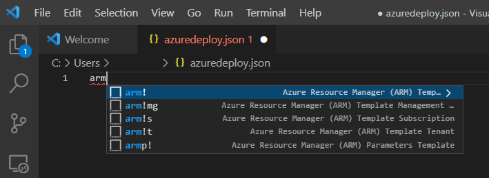
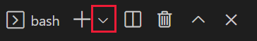
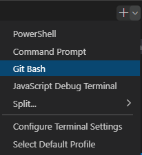
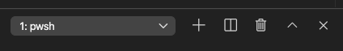
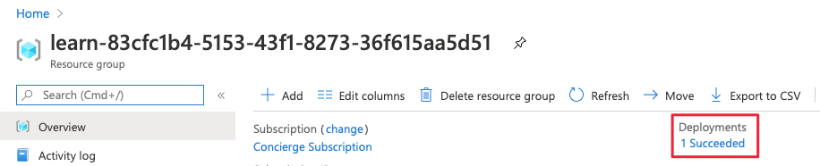
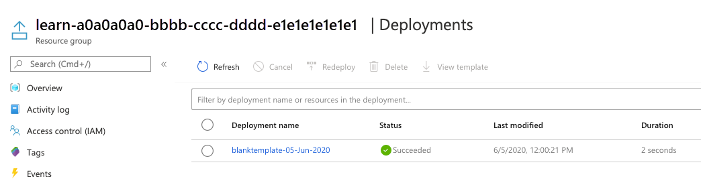
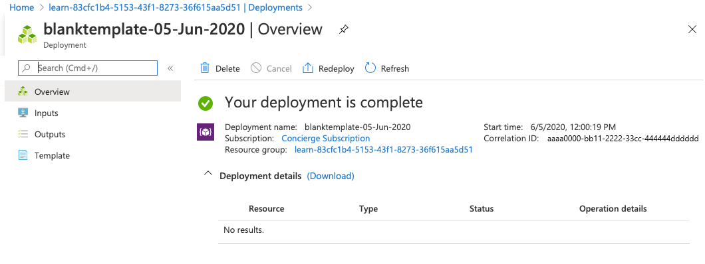
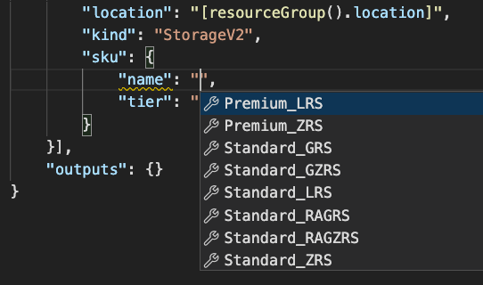
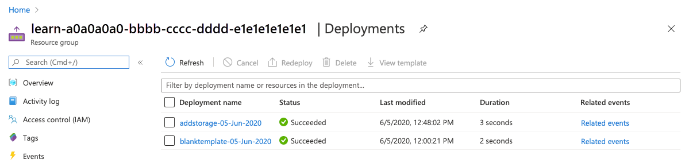
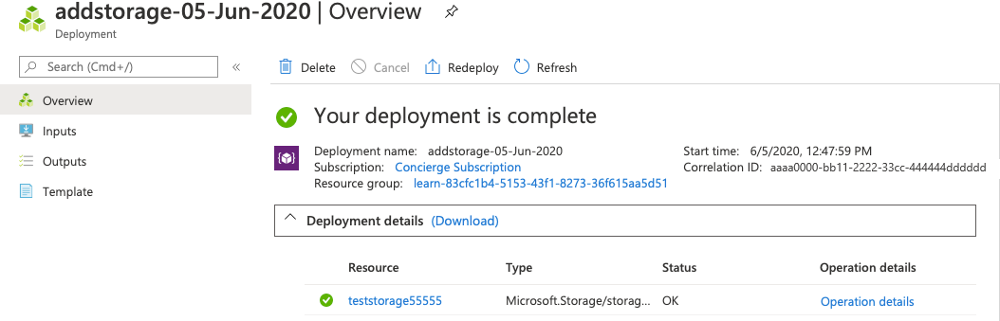

Note
The first time you activate a sandbox and accept the terms, your Microsoft account is associated with a new Azure directory named Microsoft Learn Sandbox. You're also added to a special subscription named Concierge Subscription.
In this exercise, you create an Azure Resource Manager (ARM) template, deploy it to Azure, and then update that ARM template to add parameters and outputs.
This exercise uses Azure Resource Manager Tools for Visual Studio Code . Be sure to install this extension in Visual Studio Code before starting the exercise.
Create an ARM template
-
Open Visual Studio Code and create a new file called azuredeploy.json .
-
The Visual Studio Code ARM template extension comes configured with snippets to help you develop templates. Let's start by adding a blank template. On line 1 of the file, enter arm .
-
Visual Studio Code automatically displays several potential choices that start with arm! . Select the Azure Resource Manager (ARM) template . Visual Studio Code automatically processes the schemas and languages for your template.

Your file now looks like this:
JSON{ "$schema": "https://schema.management.azure.com/schemas/2019-04-01/deploymentTemplate.json#", "contentVersion": "1.0.0.0", "parameters": {}, "functions": [], "variables": {}, "resources": [], "outputs": {} }Notice that this file has all of the sections of an ARM template that we described in the previous unit.
-
Save the changes to the file by pressing Ctrl+S .
Deploy the ARM template to Azure
To deploy this template to Azure, you need to sign in to your Azure account from the Visual Studio Code terminal. Be sure you have the Azure CLI tools installed, and sign in with the same account you used to activate the sandbox.
-
Select Terminal > New Terminal to open a terminal window.
-
If the command bar of the terminal window says bash , you have the right shell to work from and you can skip to the next section.
-
If not, select the drop-down and choose Select Default Profile .

-
Select Git Bash .

-
Select Terminal > New Terminal to open a bash shell terminal window.
Sign in to Azure
-
In the terminal window, run this command to sign in to Azure.
Azure CLIaz login -
In the browser window that opens, sign in to your account. After you sign in, a list of the subscriptions associated with this account displays in the terminal. If you activated the sandbox, you should see one called Concierge Subscription . Use this one for the rest of the exercise.
-
In the bash shell, run the following command to set the default subscription for all of the Azure CLI commands you run in this session.
Azure CLIaz account set --subscription "Concierge Subscription"If you used more than one sandbox recently, more than one Concierge Subscription might be listed. If so, use the next two steps to identify and set the default subscription.
- Run the following command to obtain the Concierge Subscription IDs.
Azure CLIaz account list \ --refresh \ --query "[?contains(name, 'Concierge Subscription')].id" \ --output table- Set the default subscription by running the following command, replacing {your subscription ID} with the latest Concierge Subscription ID.
Azure CLIaz account set --subscription {your subscription ID}
Set the default resource group
By setting the default resource group to the one created when you activated the sandbox, you can omit that parameter from the Azure CLI commands in this exercise. To set the resource group, run the following command.
az configure --defaults group="[sandbox resource group name]"
Deploy the template to Azure
Run the following commands to deploy the ARM template to Azure. The ARM template doesn't have any resources yet, so there aren't any resources created. You should get a successful deployment.
templateFile="azuredeploy.json"
today=$(date +"%d-%b-%Y")
DeploymentName="blanktemplate-"$today
az deployment group create \
--name $DeploymentName \
--template-file $templateFile
The top section of the preceding code sets the Azure CLI variables, which include the path to the template file to deploy and the name of the deployment. The bottom section,
az deployment group create
, deploys the template to Azure. Notice that the deployment name is
blanktemplate
with the date as a suffix.
You should see
Running...
in the terminal.
To deploy this template to Azure, you need to sign in to your Azure account from the Visual Studio Code terminal. Be sure that Azure PowerShell Tools are installed from the Visual Studio Code Extensions, and sign in to the same account that activated the sandbox.
-
In the command bar, select Terminal > New Terminal to open a PowerShell window.
-
If the command bar of the terminal window shows PowerShell , you have the right shell from which to work, and you can skip to the next section.

-
If not, select the down arrow and in the dropdown list select PowerShell. If that option is missing, then select Select Default Profile .
-
In the input field, scroll down and select PowerShell .
-
Select Terminal > New Terminal to open a PowerShell terminal window.
-
Sign in to Azure by using Azure PowerShell
-
From the terminal in Visual Studio Code, run the following command to sign in to Azure. A browser opens so you can sign in to your account.
Azure PowerShellConnect-AzAccountTip
The Az PowerShell module is the replacement of AzureRM and is the recommended version to use for interacting with Azure.
-
Sign in using the account you used to activate the sandbox. After you sign in, Visual Studio Code lists the subscriptions associated with your account in the terminal window. If you activated the sandbox, you see a code block that contains
"name": "Concierge Subscription". You use this subscription for the rest of the exercise.
Set the default subscription for all PowerShell commands in this session
-
Run the following command to obtain your subscription(s) and their ID(s). The subscription ID is the second column. Look for Concierge Subscription , and copy the value in the second column. It looks something like aaaa0a0a-bb1b-cc2c-dd3d-eeeeee4e4e4e :
Azure PowerShellGet-AzSubscription -
Run the following command, replacing {Your subscription ID} with the one you copied in the previous step. This command changes your active subscription to the Concierge Subscription.
Azure PowerShell$context = Get-AzSubscription -SubscriptionId {Your subscription ID} Set-AzContext $context -
Run the following command to let the default resource group be the resource group created for you in the sandbox environment. This action lets you omit that parameter from the rest of the Azure PowerShell commands in this exercise.
Azure PowerShellSet-AzDefault -ResourceGroupName [sandbox resource group name]
Deploy the template to Azure
Deploy the template to Azure by running the following commands. The ARM template doesn't have any resources yet, so there aren't any resources created.
$templateFile="azuredeploy.json"
$today=Get-Date -Format "MM-dd-yyyy"
$deploymentName="blanktemplate-"+"$today"
New-AzResourceGroupDeployment `
-Name $deploymentName `
-TemplateFile $templateFile
The top section of the preceding code sets Azure PowerShell variables, which includes the path to the deployment file and the name of the deployment. Then, the
New-AzResourceGroupDeployment
command deploys the template to Azure. Notice that the deployment name is
blanktemplate
with the date as a suffix.
When you deploy your ARM template to Azure, go to the Azure portal and make sure you're in the sandbox subscription. To do that, select your avatar in the upper-right corner of the page. Select Switch directory . In the list, choose the Microsoft Learn Sandbox directory.
-
In the resource menu, select Resource groups .
-
Select the
[sandbox resource group name] resource group. -
On the Overview pane, you see that one deployment succeeded.

-
Select 1 Succeeded to see the details of the deployment.

-
Select
blanktemplateto see what resources were deployed. In this case, it's empty because you didn't specify any resources in the template yet.
-
Leave the page open in your browser so that you can check on deployments again.
Add a resource to the ARM template
In the previous task, you learned how to create a blank template and deploy it. Now, you're ready to deploy an actual resource. In this task, you add an Azure storage account resource to the ARM template, by using a snippet from the Azure Resource Manager Tools extension for Visual Studio Code.
-
In the azuredeploy.json file in Visual Studio Code, place your cursor inside the brackets in the resources block
"resources":[],. -
Enter storage inside the brackets. A list of related snippets appears. Select arm-storage .

Your file looks like this:
JSON{ "$schema": "https://schema.management.azure.com/schemas/2019-04-01/deploymentTemplate.json#", "contentVersion": "1.0.0.0", "parameters": {}, "functions": [], "variables": {}, "resources": [ { "type": "Microsoft.Storage/storageAccounts", "apiVersion": "2023-05-01", "name": "storageaccount1", "tags": { "displayName": "storageaccount1" }, "location": "[resourceGroup().location]", "kind": "StorageV2", "sku": { "name": "Premium_LRS" } } ], "outputs": {} }Values that you should edit are highlighted in the new section of your file, and you can navigate them by pressing the Tab key.
Notice the
tagsandlocationattributes are filled in. Thelocationattribute uses a function to set the location of the resource to the location of the resource group. You'll learn about tags and functions in the next module. -
Change the values of the resource name and displayName to something unique (for example, learnexercise12321 ). This name must be unique across all of Azure, so choose something unique to you.
-
Change the value of the sku name from Premium_LRS to Standard_LRS . Change the value of tier to Standard . Notice that Visual Studio Code gives you the proper choices for your attribute values in IntelliSense. Delete the default value including the quotation marks, and enter quotation marks to see this work.

-
The resource location is set to the same location as the resource group where the resource is deployed. Leave the default here.
-
Save the file.
Deploy the updated ARM template
Here, you change the name of the deployment to better reflect what this deployment does.
Run the following Azure CLI commands in the terminal. This snippet is the same code you used previously, but the name of the deployment is changed.
templateFile="azuredeploy.json"
today=$(date +"%d-%b-%Y")
DeploymentName="addstorage-"$today
az deployment group create \
--name $DeploymentName \
--template-file $templateFile
Run the following Azure PowerShell commands in the terminal. This snippet is the same code you used previously, but the name of the deployment is changed.
$templateFile="azuredeploy.json"
$today=Get-Date -Format "MM-dd-yyyy"
$deploymentName="addstorage-"+"$today"
New-AzResourceGroupDeployment `
-Name $deploymentName `
-TemplateFile $templateFile
Check your deployment
-
When the deployment finishes, go back to the Azure portal in your browser. Go to your resource group, and you see that there are now 2 Succeeded deployments. Select this link.
Notice that both deployments are in the list.

-
Select addstorage .

Notice that the storage account is deployed.